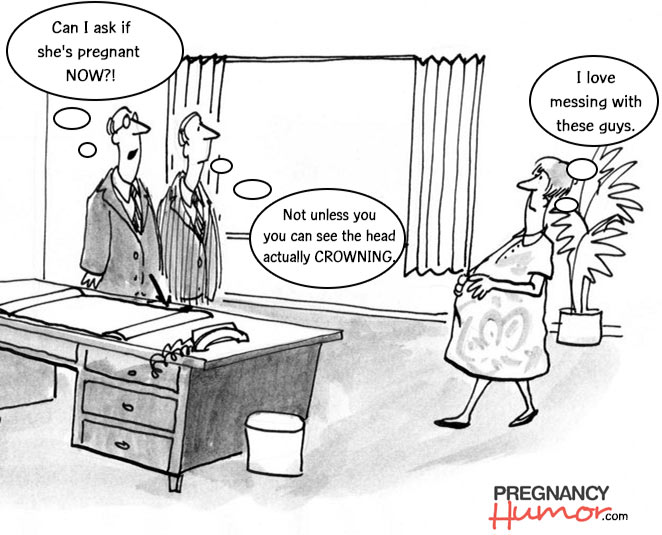
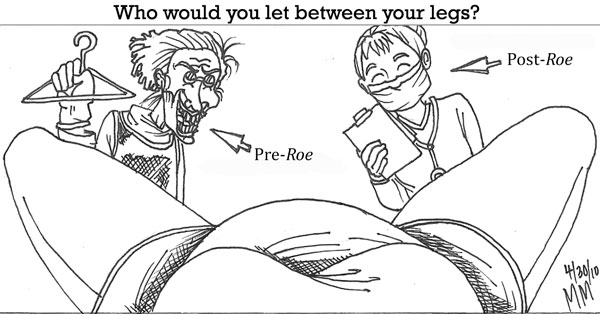
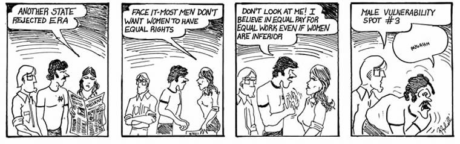
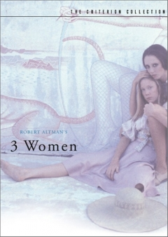
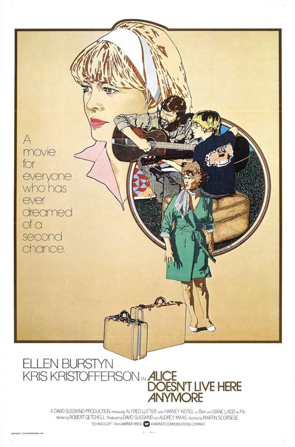
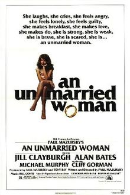

December 1978
The Pregnancy Discrimination Act Passes
By Sarah Hendricks

PregnancyHumor.com: http://pregnancyhumor.com/blog/2013/07/31/is-it-ever-appropriate-to-ask-a-woman-if-shes-pregnant-cartoon/
Sisters, you can now stop worrying about losing your job while pregnant. The United States Congress just passed an amendment to Title XII of the Civil Rights Act saying that employers can no longer discriminate someone on the basis of pregnancy.
For those of you who don’t understand this yet, we’ll bring you up to speed. Back in the day, when a woman got pregnant, she was obviously forced to take some time off her job. After all, childbirth and recovery take time, and not all women are strong enough to go right back to work. Well, you know what those employers did while she was pushing and panting and screaming? They gave her job away! They saw giving birth not as a natural process that almost all women go through, but as a time-sucker that made women less valuable workers. These men thought to themselves, "I only care that a worker comes in on time and works all day long and makes me money. If that worker is a woman and has a child, well, it's her fault for missing work! And if she's pregnant right now, I know she'll be missing work in just a few months! Of course I can choose not to hire her because of that." Those bastards will never understand what giving birth is like, much less that just because women take time off to give birth does not mean that they are less valuable than men.
Now, with this new law in place, it will be illegal for employers to treat pregnant women that way. The boss can no longer give her job to someone else when she goes into labor. If a pregnant woman is just as qualified as someone else, an employer can no longer say no to her just because she’s pregnant (although sexist employers may try to find other ways). Finally - a bit of job security for the average working woman!
But we still must fight, raise our voices, and say, “This shit isn’t good enough!” We will not stop fighting until there are as many female leaders as male leaders, as many working mothers as working fathers, as many women as men in each career. Then, only then, can we say that women and men are truly equal.
Fight on, sisters! Fight on!
ROE VS WADE: 5 YEARS LATER
By Sarah Hendricks

Editorial Comic: http://www.thecampanil.com/reproductive-rights-guest-column/
Where have we come from? Where are we going? These are questions that have plagued the feminist movement for the past two decades. Yet now, after living with the effects of Roe vs. Wade for five years, we at The Second Wave can rightly conclude some hard-hitting truths. The first, that women all over this country are waking up out of their male-induced sleep and realizing the injustice around them. The second, that we are moving towards a more equal society for women, one in which we will have full control over what happens to our bodies.
Look at our mothers before us. Listen to their stories of how they were overburdened with children, how they tried to protect themselves and their health, how they failed because a woman could never be anything more than a mother. Those were the days of back-alley abortions and desperate pregnancy preventions. Even just six years ago, single women could not get the Pill for contraceptive use – it was only for married women.
But the situation has changed now. As we all embrace the idea of free love and accepting ourselves as sexual beings, more young women are using better contraception methods to avoid unwanted pregnancies. The availability of the Pill and condoms has made women feel safer when engaging in intercourse.
But what about when those methods fail? What if a woman becomes pregnant, in college or even before? Our parents and grandparents scream and shout that this is immoral, as if womankind must always remain pure before marriage. She must never let herself be sullied by another man until she is married, and if she allows it – good riddance! – it’s her fault. Her child then becomes her burden, her punishment. She is no longer a woman. She is just another mother. If the father is a "good man", he will at least marry her before the child is born to prevent a family scandal. And even if he is a bag of scum, damnable to the highest order, is he ever the one that is blamed? No, sisters, he is not, and we all know why. He is a man, and it is in his so-called “nature” to take advantage of women. Those women who cannot teach him to restrain himself are not worthy.
Well, we say in the words of the great Robin Morgan, “goodbye to all that!” Yes, we are a nation of young women rising up. We know this is unfair treatment of womankind and we will demand change. And change has indeed happened. Five years ago, during the fight for a woman to be allowed to control her own body, we gained Roe vs. Wade. This landmark Supreme Court decision says that during the first trimester of pregnancy, the decision to have an abortion will be between a woman and her doctor alone, with no state or government input. Since then, abortion services have become cheaper and safer.
However, cheaper and safer abortions have not spread equally across this country. Many black and poor women still cannot find or pay for abortion services. These women, with their large families and multiple unwanted children, should be the ones receiving the best care. We reject the idea that only the rich white woman can decide how many children she will have, that her money is what gives her the right to own her body. No, those at the bottom are the ones that need our help. Every woman deserves the right to decide what’s best for herself. So the feminist movement did something about it: we set up our own health clinics.
Spread across the country, these clinics aim to provide helpful, cheap, woman-centered health advice. No more will women be subjected to holier-than-thou doctors, with their judgmental attitudes and prying eyes. No longer will male doctors poison our bodies with aspirin because they don’t want to take the time to listen to our problems. No, no more hmm-hmm-ing and refusing to provide information – no more! Too long we have hid in shame because of our bodies – NO MORE! Let a woman be taken care of by one of her own sex, one who understands what it’s like to deal with these problems day in and day out. At these clinics, specifically by and for women, ladies from all walks of life get the same high-quality treatment. They are lead through an exploration of their bodies, their cycles, their unique situations, by women. They are offered safe abortions, birth control information, and natural health remedies without judgment or disgrace.
This, this new system here, is the future of women’s health. Thank God for Roe vs Wade, because, finally, women can be treated the way they have always deserved to be treated: as people.
Equal Rights Amendment – Where We Stand Now
By Sarah Hendricks

Molarity Comic: http://magazine.nd.edu/news/19238-molarity-classic-68-72/
We stand on the cusp of victory over tyrannical male rule. As 1978 turns into 1979, we watch as the deadline for the Equal Rights Amendment (ERA) looms closer and closer. How much do we have left to go? Let’s look at how far we have come as a movement, and what we have left to do to launch our sisters into a new age of equality.
So what is the ERA? It’s an amendment to the United States Constitution that guarantees equal rights between men and women, something that we’ve been fighting for these past two decades. As an Amendment, it must pass through the House, then the Senate, be signed by the President, and then be ratified by at least 38 states, or 75%. The text of the amendment says that women must be given the same rights as men under the law, with no discrimination based on sex. The amendment goes on to say that Congress will be able to pass laws to enforce this, and the amendment will be effective two years after it is ratified.
Back in 1970, the National Organization of Women picketed in Washington and demanded our rights. In August, 20,000 women nationwide participated in the Women’s Strike for Equality. We woke up our representatives with a roar. They realized that we will not back down, so they began working with us to establish female equality. The law passed the House in 1971 and both the Senate and the President in 1972.
Then, it was up for the States to decide. Many ratified it within the first year; Hawaii even ratified it the same day that it was introduced. The list of states that have ratified the ERA, in order of ratification date up to today, is: Hawaii (March 22, 1972), New Hampshire (March 23, 1972), Delaware (March 23, 1972), Iowa (March 24, 1972), Idaho (March 24, 1972), Kansas (March 28, 1972), Nebraska (March 29, 1972), Texas (March 30, 1972), Tennessee (April 4, 1972), Alaska (April 5, 1972), Rhode Island (April 14, 1972), New Jersey (April 17, 1972), Colorado (April 21, 1972), West Virginia (April 22, 1972), Wisconsin (April 26, 1972), New York (May 18, 1972), Michigan (May 22, 1972), Maryland (May 26, 1972), Massachusetts (June 21, 1972), Kentucky (June 26, 1972), Pennsylvania (September 27, 1972), California (November 13, 1972), Wyoming (January 26, 1973), South Dakota (February 5, 1973), Oregon (February 8, 1973), Minnesota (February 8, 1973), New Mexico (February 28, 1973), Vermont (March 1, 1973), Connecticut (March 15, 1973), Washington (March 22, 1973), Maine (January 18, 1974), Montana (January 25, 1974), Ohio (February 7, 1974), North Dakota (March 19, 1975), and Indiana (January 24, 1977).
This list comes out to 35 states, just three short of what will be needed to pass the Amendment. But in the past four years, we have watched the rate of ratification dwindle to almost nothing. In the past three years, only one state, Indiana, has ratified the Amendment. Some states are still fighting, however, such as Florida, Illinois, and the Carolinas. In those states, one of the legislative chambers has approved the amendment but the other has not.
In the meantime, some states have backtracked, getting cold feet at the idea of women being equal to men. As of December 1978, Nebraska, Tennessee, Idaho, and Kentucky all voted to rescind their ratification of the ERA. Whether Congress will actually allow them to take back their vote remains to be seen. We have also heard that Congress may extend the deadline, but for how long no one seems to know.
So what can we do? We must TAKE TO THE STREETS! Women’s voices must be heard throughout the nation, claiming what is rightfully ours: the right to live as equals to men. Sisters, this is the one way that we can start truly taking back our freedom that men have so long withheld from us. Go to your state legislature, demand that they pass this law in the name of democracy and freedom. Organize hunger strikes. Pass out flyers to those on the streets. Talk to the women in your neighborhood. This is a community effort; if we all rise together, screaming, shouting, strong, then we will wash right over those that try to hold us back.
We are the tidal wave of feminism. We are The Second Wave.
Feminist Movie Reviews
By Sarah Hendricks
As the decade begins to come to a close, we look back on all those things that made it unique and remarkable. For the feminist movement, this was the decade of victory and creativity. Women's roles became more diverse in real life as well as fantasy. The following films are the crucial breakthroughs that we saw during the 1970's. If you've missed one, now's your chance to see it: Madame Tilly's movie theater will be hosting a showing of all of these films, in this order, as a tribute to the gains that feminism has made this year. The showing will last all day Saturday December 23 starting at 10am. Below are the four stunning and original feminist films that will be shown.

Source: http://www.thesamecinemaeverynight.net/robert-altmans-3-women-a-freaky-70s-movie-to-love/
And so 1 woman became 2…2 women became 3… 3 women became 1.
This movie has the watery, flowing feeling of recurring dreams. The film centers on Millie, a girl who tries her hardest to fit in but never can. Even with careful attention to her hair and dress, she is passed over by her neighbors and objects of her affections. Enter Pinky, a young girl who becomes Millie’s roommate. She idolizes the “social butterfly,” but things start to get weird after Pinky wakes up from an attempted suicide jump and resulting coma. Suddenly she is Millie, stealing her roommate’s clothes, her bed, even her name. The women swap personalities, with the third woman absorbing them by the end of the film.

Souce: http://www.btchflcks.com/2013/11/unsentimental-love-and-alice-doesnt-live-here-anymore.html#.VG1qsYvF9Ww
A picture for anyone who has ever dreamed of a second chance!
Now here’s a film we can get behind. We follow protagonist Alice as she takes her life into her own hands and leaves the world she knows after the death of her distant husband. While traveling to California, she meets seemingly available and charming Ben, who she begins to have an affair with. But it comes to a drastic end. Ben’s wife confronts Alice and Ben beats his marriage partner senseless. Alice flees further west and settles down in a town as a waitress. She meets divorced David, a kind man who helps Alice raise her preteen son. This film speaks to us “normal” women as we connect to and recognize the situations that Alice goes through. We feel with her and she shows us that it is okay to love ourselves. We are people; we are primary in our own lives. Take your daughters, your sisters, and your mothers to see this one – show other women that our movement includes everyone.

Souce: http://en.wikipedia.org/wiki/An_Unmarried_Woman
She laughs, she cries, she feels angry, she feels lonely, she feels guilty, she makes breakfast, she makes love, she makes do, she is strong, she is weak, she is brave, she is scared, she is... an unmarried woman.
As we fight for divorce rights, this film becomes more relevant to women who become single after having been married. Erica’s husband leaves her for another woman (something many of us experience) and she’s left to pick up the pieces of herself. She feels sad, she feels angry, she feels lonely… she goes through a full range of emotions that real women experience. And, in time, she comes to love herself and refuse to drop everything for the man she learns to love. We love this message: you are an individual, you are more than just a mother or a wife, and you shouldn’t sacrifice your soul to be with the one you love.
Souce: http://www.imdb.com/title/tt0073198/
In our strange 1970’s, this film takes everything we once thought was essential to movies and throws it out the door. The camera follows Jeanne over three days in her duties as a housewife and mother, detailing all of the mundane task-work of a woman that Hollywood leaves out. But slowly, her life unravels, leaving us with a hair-raising conclusion. This isn’t the traditional sappy romance or action film – it runs 3 hours and 15 minutes with long shots that require you to watch carefully to pick up on the subtle changes in mood. It’s a foreign feminist film at its best.